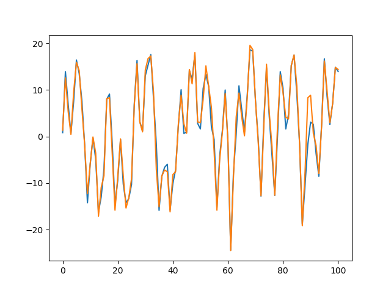

BootstrapFilter package¶
BootstrapFilter.BootstrapFilter module¶
-
class
BootstrapFilter.BootstrapFilter.BootstrapFilter(p_x0, transition, likelihood, n, y)¶ Base class implementing a BootstrapFilter (see Sequential Monte Carlo in Practice - A. Doucet, page 11).
Constructor of BootstrapFilter. It takes the marginal prior probability \(p(x_0)\), the transition probability \(p(x_t | x_{t-1})\) and the likelihood density function \(p(y_t | x_t)\). Notice that since this SMC algorithm is a BootstrapFilter weights are found by evaluating the likelihood.
- Parameters
p_x0 (function) – Marginal prior probability \(p(x_0)\) used to sample the initial hidden states.
transition (function) – Transition probability used by the hidden Markov chain to move forward in time.
likelihood (function) – Likelihood function given \(x_t\) (since y are conditionally independent).
n (int) – Number of particles. This is the number of samples used at each step.
y (ndarray) – Observed data. This is generated further down in the script.
-
tmax¶ Size of y. Used to determine how many time steps to run (\(t_{\text{max}} + 1\)).
- Type
int
-
x¶ Numpy array of size (\(t_{\text{max}}+1\), \(1\)).
- Type
ndarray
Notes
This section can be used to provide additional notes. For instance we can LaTeX to write equations related to the class.
\[p(x_t \mid x_{t-1}) \quad p(y_t \mid x_t) \quad p(x_0)\]We can also use it in line. For instance the initial distribution is given by \(p(x_0)\) the transition distribution is \(p(x_t \mid x_{t-1})\) and the likelihood \(p(y_t\mid x_t)\).
Examples
Here we show the example introduced by Gordon (1993) 1. First, we define the initial distribution, the transition and the likelihood function/emission.
>>> import numpy as np >>> from numpy.random import normal >>> from scipy import stats >>> import matplotlib.pyplot as plt >>> initial_sampler = lambda n: normal(loc=0.0, scale=np.sqrt(10), size=(n, 1)) >>> transition = lambda x, t: normal(loc=(0.5*x + 25*(x / (1 + x**2)) + 8*np.cos(1.2*t)), scale=np.sqrt(10)) >>> likelihood = lambda y_t, x_t: stats.norm.pdf(x=y_t, loc=(x_t**2/20), scale=1.0) >>> emission = lambda x_t: normal(loc=(x_t**2/20), scale=1.0)
Next, we construct a dataset with \(t_{\text{max}}\) data points (excluding \(x_0\)).
>>> t_max = 100 # Maximum time t up to which we generate data >>> n = 100 # Number of particles >>> dim = 1 # Number of dimensions. For illustrative purposes will be 1 >>> x = np.zeros((t_max+1, dim)) # Container for x hidden values >>> y = np.zeros((t_max+1, dim)) # Container for y observed values >>> x[0, :] = initial_sampler(n=1) # Sample x_0 from the initial distribution >>> y[0, :] = np.nan # Set y_0 to be NA since observed process starts at y_1
Alternate between transition and emission sampling
>>> for t in range(1, t_max+1): ... x[t, :] = transition(x[t-1, :], t) # Sample x_t from the transition distribution p(x_t | x_{t-1}) ... y[t, :] = emission(x[t, :]) # Sample y_t given x_t from the emission distribution p(y_t | x_t)
Finally, instantiate and run the model.
>>> model = BootstrapFilter(p_x0=initial_sampler, transition=transition, likelihood=likelihood, n=n, y=y) >>> model.run()
We can see from the result that it is indeed working.
>>> means = np.mean(model.x, axis=1) >>> fig, ax = plt.subplots() >>> ax.plot(np.arange(101), means) >>> ax.plot(np.arange(101), x) >>> plt.show()
References
- 1
Gordon, N.J., Salmond, D.J. and Smith, A.F.M.. “Novel approach to nonlinear/non-Gaussian Bayesian state estimation.” IEEE Proceedings F, Radar and Signal Processing 140 , no. 2 (1993): 107-113.
-
initial_sampler()¶ Method used to sample particles at time t=0 of the algorithm.
- Returns
Samples from p(x_0).
rtype: np.array
-
likelihood(y_t, x_t)¶ Likelihood function p(y_t | x_t). This is used to compute the weights.
- Parameters
y_t (np.array) – Observed value y at time t, for which we want to evaluate the likelihood.
- Returns
New weight p(y_t | x_t).
- Return type
np.array
-
run()¶ Runs the BootstrapFilter algorithm. :return: Nothing to return. :rtype: None
-
transition(x, t)¶ Method implementing the transition probability p(x_t | x_{t-1}). Set by the constructor __init__().
- Parameters
x (np.array) – Current value of the hidden Markov chain, denoted x_{t-1}. Will be used to sample x_t.
- Returns
A sample x_t from p(x_t | x_{t-1}).
- Return type
np.array